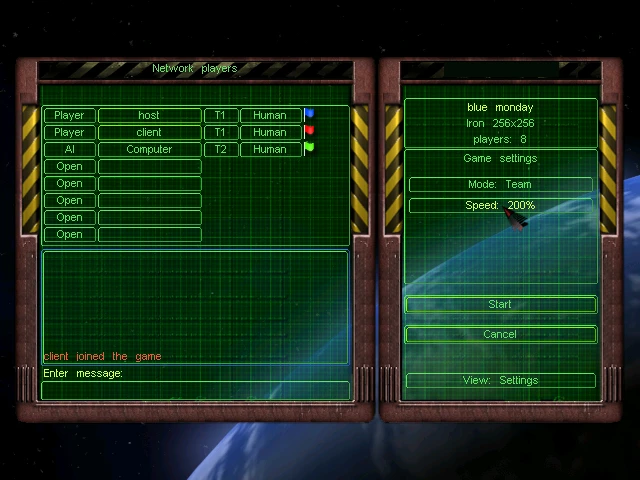
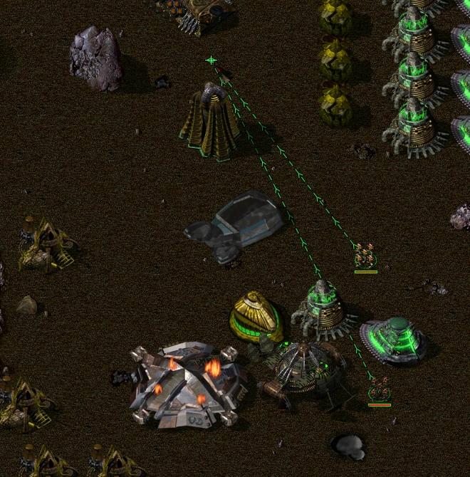
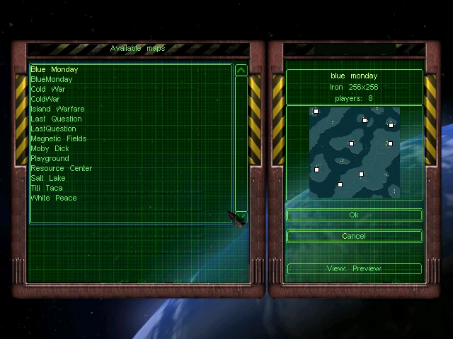

Play with up to eight players. The lobby brings map information and match settings together before launch. In 0.2.2, hosts can choose a fixed match speed from 100 to 200 percent.

Actual lobby · project capture01 / MATCH SETUP
Use the same game release and ordered mod content on every peer. Mods are not transferred automatically; joining an already-started match is not supported.
QUEUES & PATROLS
Give the next order. Keep the whole plan.
Shift-right-click queues moves and attacks. Alt-right-click creates a repeating patrol; Shift+Alt-right-click extends it. Aircraft can patrol too.
Read selected routes at a glance: green for movement, red for attacks, blue for patrols and yellow for storage rallies. Hold Shift to reveal short routes.
Special interactions now use Ctrl-right-click by default. Strategic bindings are remappable in the launcher.
0.2.2 / STRATEGIC COMMANDS

02 / ROUTE DISPLAY · PROJECT CAPTURE
BEFORE & DURING THE MATCH
Scout the map. Set the rally.
Inspect terrain, ore and landing positions before starting. The map picker and lobby offer Description, Preview and Settings views.
Give a storage building a rally destination. Enable its optional Auto dispatch to send newly produced units and units repaired to full health to that point.
Auto starts off. Switching it on does not eject existing healthy occupants or start repairs. Shuttles do not have storage rallies or Auto.
0.2.2 / MAP PREVIEW & STORAGE

03 / MAP PREVIEW · PROJECT CAPTURE
RAISED LIMITS & GAMEPLAY FIXES
Bigger battles. Smoother play.
Available in 0.2.2: optional larger limits, default-on movement and combat improvements, and targeted campaign and multiplayer fixes.
01
Optional raised limits
Enable Raised limits in the launcher for up to 500 units and 500 buildings per player, specialist building pools up to 127, and 4,000 projectiles.
Off by default. Selection remains capped at 200 units; see the release notes for save compatibility and remaining limits.
02
Movement & combat
Improved movement, group movement and combat are on by default. Fixes cover sequential storage departures, boarding and diagonal garage-exit clearance.
Tactical scrolling is steadier, too.
03
Campaign & multiplayer
Fixed soldier-shot multiplayer desync and build/research panels for third and later player seats. Starting a new campaign after loading a save now uses the current starting-planet configuration.
Optional Tech tree fixes recheck unlocks after loading or revisiting a planet.
YOUR SETUP
Change how you command.
Configure controls, interface scale and mod priority from the launcher.
01
Remap strategic controls
Edit actions, modifiers and world mouse roles in the launcher. Capture a binding, check conflicts or reset it. Changes apply at the next game start.
02
Scale the interface separately
Choose interface size independently of rendering resolution, with automatic display scaling. A higher-resolution battlefield need not mean smaller controls.
03
Choose your mod order
Enable loose-file mods and arrange their priority in the launcher; later, lower entries win. Supported content includes resource overrides, skirmish maps, patches to existing configuration records and custom terrain.
Apply changes and restart the game. Configuration patches do not add or remove unit or building record types.